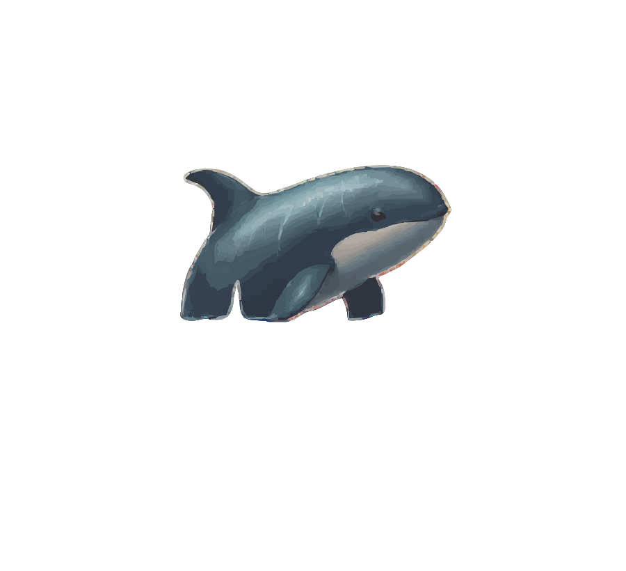
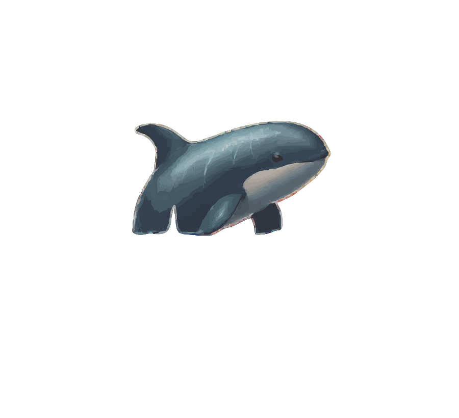

Fading Footprints:
A Tale of Lost Wildlife & Species on the Brink
Welcome to our interactive storytelling project, where data visualization meets conservation awareness. In this project,
We explore the profound impact of species extinction, using scrolly-telling drawing inspiration from *Reuters On the Brink*.
Using custom visualizations like flower glyphs to represent IUCN summary statistics, we highlight diverse and iconic species under conservation, showcasing the effectiveness of various measures.
Through immersive scrollytelling, we delve into the Yellowstone gray wolf case study, illustrating the ecological consequences of their extinction and the transformative changes following their reintroduction.


Custom Visualization: Flower Glyph Representation of IUCN Assessment Data
Overview: This visualization uses summary statistics from the International Union for Conservation of Nature (IUCN) to present trends in species vulnerability over time.
The design combines traditional graph elements with a creative flower glyph to make the data more engaging and intuitive.
Axes:
X-axis: Represents the year of assessment.
Y-axis: Represents the total number of assessments conducted in each year.
Flower Glyph:
Each year is represented by a flower glyph. The petals symbolize specific subtypes of vulnerability (e.g., endangered, critically endangered), and their size reflects the number of organisms in each subtype.
Interactive Button:
A button at the top switches the Y-axis view from Total Assessments to Difference by Year, allowing users to explore yearly changes in assessments.
Visual Design:
The flower glyph petals are color-coded by subtype for clarity.
Hovering over a flower reveals a tooltip with detailed subtype data, enhancing the user experience with precise information.
Earth is home to all species, each vital to the balance of ecosystems. However, human actions like habitat destruction and pollution have driven many species to extinction and endangered others. It’s our responsibility to protect the planet by supporting conservation, using sustainable practices, and advocating for stronger protections for wildlife. Together, we can help ensure a thriving future for all.
Let’s protect our planet—because Earth belongs to all.
To understand the gravity of biodiversity loss, let us look at a case study from Yellowstone National Park. In the early 20th century, grey wolves were eradicated from the National Park due to extensive hunting and predator control programs. This triggered a cascading set of events which can be explored in a scrolly-telling visualization below.
Excessive hunting of Grey Wolves
Endangered status of Grey Wolves
Extinction of Grey Wolves
Overpopulation of Elk and Deer
Vegetation Loss and Degraded River System
Timeline of Wolf Conservation
The absence of grey wolves created an ecological imbalance and disrupted the local ecosystem.
Their reintroduction was vital to restoring balance, as wolves regulate herbivore populations,
allowing vegetation to recover, soil to stabilize, and biodiversity to flourish, ultimately
reviving the health of the entire ecosystem.
Transformative Effects on the Ecosystem
Let's explore how the reintroduction of grey wolves positively transformed the ecosystem,
restoring balance, reviving vegetation, and fostering biodiversity across Yellowstone.
Deer population reduced by 60%
Over-grazing has significantly declined
Healthier river ecosystem
Coyote population stabilized
Changed animal behaviors and trophic cascade effects


 
